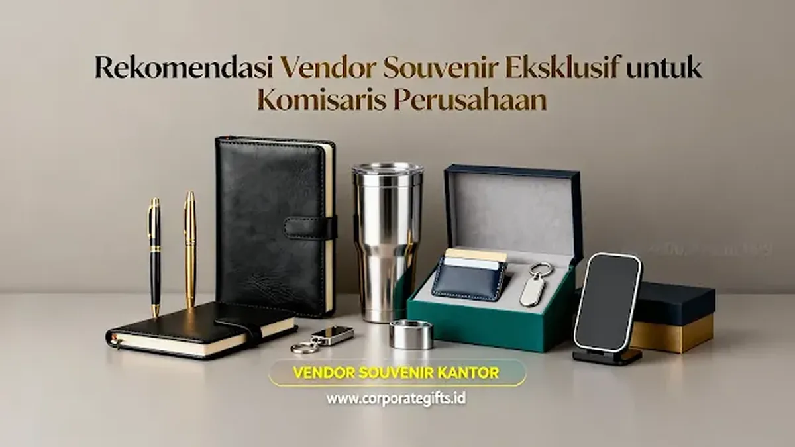

Corporate Gifts ID - Menentukan cinderamata bagi dewan komisaris dan jajaran direksi membutuhkan kecermatan tingkat tinggi. Souvenir untuk pucuk pimpinan perusahaan tidak sekadar dinilai dari harga nominalnya, melainkan mencerminkan rasa hormat institusi, standar etika bisnis, serta reputasi korporasi di mata para pemangku kepentingan (stakeholders).
Vendor souvenir yang direkomendasikan untuk komisaris perusahaan adalah penyedia yang terbukti memiliki spesialisasi dalam corporate gift level VIP eksekutif. Vendor tersebut harus mampu menyediakan kurasi material premium (kulit asli, kristal optik, paduan titanium metal), teknik grafir laser mikro berpresisi tinggi, serta boks kemasan rigid magnetik berlapisan bludru (velvet).
Kunci Sukses Pengadaan Souvenir Komisaris:
- Standar Material Kelas Atas: Utamakan material genuine leather, stainless steel grade medis SUS 316, plakat kristal murni K9, atau pulpen mewah bergaransi resmi.
- Penerapan Subtle Branding: Hindari logo berukuran besar; gunakan grafir inisial nama personal komisaris yang dipadu dengan logo perusahaan secara elegan dan minimalis.
- Pengemasan Eksklusif: Wajib menggunakan rigid hardbox dengan bantalan spon EVA die-cut rapi dan kartu ucapan berstempel khusus.
- Zero-Defect Quality Control: Toleransi cacat produksi harus 0% untuk menjaga integritas acara Rapat Umum Pemegang Saham (RUPS) atau pelantikan dewan direksi.
Mengapa Dibutuhkan Vendor Khusus untuk Souvenir Komisaris?
Vendor merchandise promosi massal umumnya tidak dirancang untuk menangani pengadaan kelas atas. Mereka terbiasa dengan metode cetak sablon cepat dalam volume ribuan pcs yang sering kali mengorbankan detail finishing.
Untuk dewan komisaris, Anda membutuhkan vendor khusus yang memenuhi standar kualifikasi berikut:
- Memahami Protokoler Eksekutif: Mengerti kaidah penempatan logo yang bersahaja dan penulisan nama beserta gelar kehormatan secara akurat.
- Akses ke Bahan Baku Impor & Kurasi Eksklusif: Memiliki lini produk terbatas yang tidak diperjualbelikan secara umum di pasar retail bebas.
- Layanan Proofing Sampel Fisik Lengkap: Menyediakan unit sampel asli sebelum approval produksi guna memastikan ekspektasi manajemen terpenuhi 100%.
- Kerahasiaan Data & Kepatuhan B2B: Menyediakan kelengkapan legalitas perusahaan, faktur pajak resmi, serta surat perjanjian kerahasiaan jika diperlukan.

Perlengkapan meja kerja eksekutif berbahan kulit dan metal dengan kustomisasi laser engraving halus.
5 Vendor Souvenir Eksklusif Terbaik untuk Level Eksekutif
Berikut daftar penyedia layanan cinderamata terpercaya di Indonesia yang memiliki reputasi kuat dalam memproduksi souvenir custom VIP untuk jajaran pimpinan korporat:
1. CorporateGifts.ID (Pilihan Utama Korporasi Nasional)
Keunggulan Spesifik: Merupakan vendor spesialis corporate gifting premium berbasis di Surabaya yang melayani pengiriman ke seluruh Indonesia. Memiliki kurasi lengkap mulai dari plakat kristal 3D, executive fountain pen, leather gift set impor, hingga wireless charging station bersertifikasi resmi. Dilengkapi layanan personalisasi deboss kulit dan grafir laser presisi tinggi dengan standar kemasan hardbox magnetik mewah.
Sangat Cocok Untuk: Perusahaan BUMN, korporasi multinasional, dan institusi perbankan yang menginginkan hasil akhir sempurna untuk agenda RUPS, perpisahan masa jabatan komisaris, atau perayaan milestone perusahaan.
2. SouvenirKantor.biz.id
Keunggulan: Fokus pada perlengkapan kantor premium dengan pendekatan desain minimalis modern. Unggul dalam produksi exclusive pen set, notebook agenda kulit, dan desk name plate bernuansa elegan.
3. SeminarKit.id
Keunggulan: Penyedia paket seremonial cepat yang handal dengan variasi gift set hardbox berlapis busa spon velvet, ideal untuk mendampingi dokumen laporan tahunan dewan komisaris.
4. MerchHub Corporate
Keunggulan: Menyediakan variasi smart gadget eksekutif seperti powerbank berbalut kulit asli, wireless charger pad kayu solid, dan audio TWS bermerek ternama.
5. TumblerSouvenir.com
Keunggulan: Spesialis drinkware premium berbahan stainless steel vacuum ganda (SUS 316/304) dengan teknologi sensor suhu LED pintar yang cocok bagi mobilitas tinggi para pimpinan.
5 Kriteria Evaluasi Wajib Saat Memilih Vendor Souvenir Dewan Komisaris
Sebelum menerbitkan Surat Perintah Kerja (SPK) atau Purchase Order (PO), pastikan tim pengadaan Anda melakukan verifikasi atas 5 indikator utama berikut:
- Kualitas Material Fisik (Material Grade Integrity): Pastikan bahan yang digunakan memiliki ketahanan prima. Untuk produk kulit, gunakan genuine leather atau microfiber leather premium; untuk logam, pastikan menggunakan material anodized yang tahan gores dan anti-karat.
- Kemampuan Teknik Grafir Mikro: Mesin grafir vendor harus mampu mencetak font berukuran kecil dengan ketajaman sempurna tanpa membuat pinggiran logam hangus atau kasar saat disentuh.
- Kekokohan dan Finishing Kotak Kemasan: Ujilah ketebalan karton board boks (minimal greyboard no. 30), kekuatan engsel magnet, serta kerapian pengeleman kertas pelapis luar agar tidak bergelembung.
- Portofolio Klien Terverifikasi: Periksa daftar korporasi ternama yang pernah mempercayakan pengadaan gift set mereka kepada vendor tersebut.
- Garansi Penggantian Unit Cacat: Vendor terpercaya seperti CorporateGifts.ID memberikan garansi retur instan apabila terdapat ketidaksesuaian hasil grafir atau kerusakan selama proses pengiriman ke venue acara.
Tabel Matriks Perbandingan Kategori Souvenir Komisaris
Gunakan tabel matriks acuan berikut untuk memetakan jenis produk, estimasi budget, dan momentum penyerahan yang tepat bagi dewan komisaris:
| Kategori Souvenir | Estimasi Budget per Set | Pilihan Produk Utama | Tipe Personalisasi | Momentum Penyerahan |
|---|---|---|---|---|
| Executive Desk Set | Rp350.000 - Rp600.000 | Desk Organizer Kulit + Pulpen Fountain Metal + Name Plate | Deboss Logo & Grafir Nama Personal | Pelantikan Dewan Komisaris Baru |
| Smart Luxury Gadget | Rp450.000 - Rp850.000 | Wireless Charger Kayu Alami + Powerbank Kulit + Laser Pointer | Laser Engraving Mikro Presisi | Rapat Evaluasi Triwulan / RUPS Tahunan |
| Crystal Honor & Award | Rp500.000 - Rp1.200.000 | Plakat Kristal Optik K9 3D + Executive Watch Stand | 3D Subsurface Laser Engraving | Purna Tugas / Pensiun Dewan Komisaris |
| Wellness & Hospitality VIP | Rp400.000 - Rp750.000 | Tea Set Keramik Mewah + Tumbler Vacuum SUS 316 | Gold Foil Stamping pada Kotak Kayu | Apresiasi Akhir Tahun & Hari Raya |
5 Kesalahan Fatal dalam Pengadaan Souvenir Eksekutif
Hindari 5 kekeliruan umum berikut agar pengadaan cinderamata pimpinan berjalan sukses tanpa mencoreng reputasi divisi:
- Tergiur Penawaran Harga Terlalu Murah: Harga di bawah standar pasar hampir selalu berbanding lurus dengan material ringkih yang mudah patah atau terkelupas.
- Mengabaikan Tahap Pembuatan Mockup & Proofing: Langsung menyetujui produksi massal tanpa memegang sampel fisik sering kali berujung pada kekecewaan warna atau ukuran font grafir.
- Ukuran Logo Terlalu Dominan (Over-Branding): Komisaris enggan menggunakan barang yang logonya terlalu mencolok karena terlihat seperti merchandise promosi jalanan.
- Waktu Pemesanan Terlalu Mepet (Rush Order): Produksi kado eksekutif membutuhkan waktu pengerjaan tangan (handcrafting) yang teliti pada boks dan finishing.
- Kemasan Boks yang Tipis dan Mudah Penyok: Boks luar yang lemas merusak 80% impresi kemewahan saat bingkisan diserahkan di atas podium.
Pertanyaan Seputar Vendor Souvenir Komisaris (FAQ)
Kesimpulan dan Konsultasi Pengadaan di CorporateGifts.ID
Memilih vendor souvenir untuk komisaris perusahaan menuntut pertimbangan yang matang atas reputasi, kapasitas produksi, dan standar kualitas pengerjaan. Souvenir yang dirancang dengan cita rasa tinggi akan menjadi simbol penghormatan yang membanggakan serta mempererat loyalitas dan dedikasi jajaran dewan komisaris terhadap keberlanjutan bisnis perusahaan.
Percayakan pengadaan souvenir komisaris, gift set direksi, dan cinderamata RUPS perusahaan Anda kepada CorporateGifts.ID. Temukan puluhan pilihan produk berkelas di katalog corporate gift resmi kami atau diskusikan kebutuhan kustomisasi khusus melalui formulir permintaan penawaran resmi (RAB) hari ini.
Disclaimer: Pilihan produk, variasi kemasan hardbox, dan estimasi biaya per unit dapat disesuaikan secara fleksibel dengan pagu anggaran korporat Anda melalui tim konsultan CorporateGifts.ID.